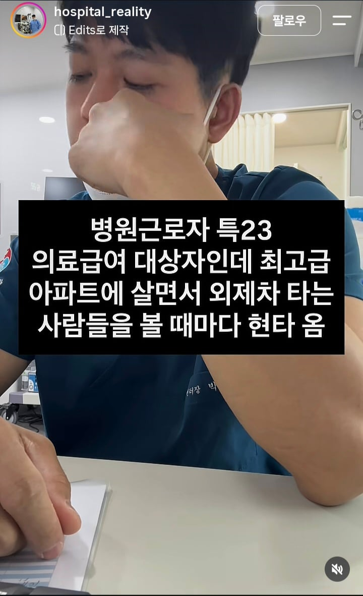
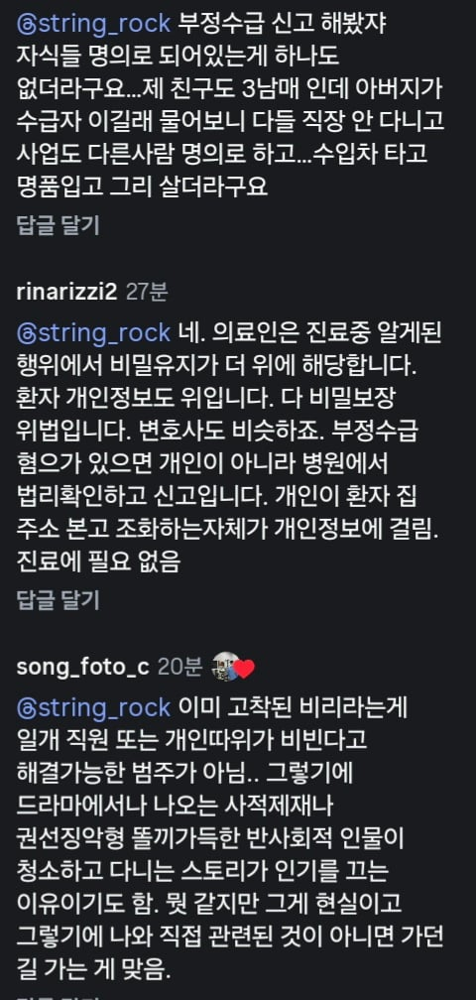

의료급여
생활유지 능력이 없거나 생활이 어려운 저소득 국민의 의료문제를
국가가 보장하는 공공부조제도로 건강보험과 함께 국민 의료보장의 중요한 수단이 되는 사회보장제도
신고는 왜 못하냐면


생활유지 능력이 없거나 생활이 어려운 저소득 국민의 의료문제를
국가가 보장하는 공공부조제도로 건강보험과 함께 국민 의료보장의 중요한 수단이 되는 사회보장제도
신고는 왜 못하냐면

공익 목적의 공공기관으로의 신고는 개인정보보호법 할필요없다
그리고 찾아내면 경우에따라 돈 지급
아마 못바꾼다고 본다
차량의 경우 신고한사람으로 명의이전
거주지의경우 동일
이러면 그냥 이억물고 1주일안에 전부 찾아서 해결가능
실비보험가입자들 나이롱으로 한방병원 입원해서 페이백받으며 출퇴근찍는것도 유명하지
요즘 존나 빡세지긴했음
서울 한방병원 좀 만 규모있으면 연1회는 실사나오는느낌
돌려놓으면 사실상 불가능잊...
궁금한데 어떻게 환자가 BMW 타는지 강남 아파트 사는지 알수 있는거지? 주차장이나 집 까지 따라 나가고 이러지는 않을거 아니야
병원은 등록할 때 대부분 주소 기입해야 해서 아파트 정도는 차트에 나오고 주차 넣을 때 자동차 사진 뜸
병원 가면 주소 쓰잖아 신분증도 내고
병원안가봄??
건보 엄마가 내는데 외국 사는 대학원생이라 한국 병원 일평생 딱 삼개월 써봄…
올해 의료급여환자 진료급여 미지불 9000억 ㅋㅋ
시발 당첨됨 ㅋㅋㅋㅋㅋㅋㅋㅋㅋㅋ 급여환자 진료비 내년까지 안준대서 빡돔.
아니 약도 다 줘서 약 대금 지불해야 하는데. 약국에서 돈 달라고 해도 정부가 안준대 ㅅㅂ.
지연이자도 안 주고 원금만 줌. 개깡패임
나라에 구상권청구하라고 카드사에말하고싶음ㅋㅋ
의심자 신고를 병원에 의무화하면 어때?
야이 그걸 왜 병원에 의무화를 해서 일을 더 시켜 ㅋㅋㅋㅋ
의무화는 안돼고 신고자 포상제도를 하면 괜찮겠지
그것도 좋고. 개인정보라서 아무나 못 한다길래 병원 생각해 본 거임
아 그건 좀 그렇네
다 니네 세금이다
저거 못잡는 이유는 재산을 차명으로 돌려놓기 때문임
명의는 친척으로 돌려놓고 외제차 끌고 다니는거임
그래서 최소 임대아파트는 주차장에 놓을 수 있는 차가 포터 정도의 가격 이하로 정해져있음
학교 일 해도 다 보임
옷 브랜드 입고 맨날 교외체험학습 해외 이런데 놀러가거나 혹은 애 말로는 가게가 n개라는데(애들은 순수하니까)
교육복지지원대상자라서 이상하다 하고 확인해보면
가계소득이 전혀 말이 안되게 찍혀있는 경우가 있는거임 소위 탈세정황..
그런데도 뭐 어쩌겠음 그냥 교육복지 받는거지 그런 학생들은
뭐 사실 이런건 화도안나는데 그런사람들이 학교에 되도않는걸로 민원 더 많이넣어서 음.,아니다 할말 아낌
제발 저런 새끼들 대가리좀 부숴놓자 나라는 뭐하냐...
근데 꼭 받아야될 사람은 받기 힘듦
존나 많다X 가끔있다O
그리고 장애수당 받는다고 외제차 타지 말라는 법은 없음
바꿔서 생각하면 아픈건 똑같은데
외제차 있다고 장애수당을 못받는게 이상한거임
장애인이 외제차 타니 수당 받으면 안 된다 : x
외제차 타고 다니면서 기초수급 받으면 안 된다 : o
왜 저 사람이 한 말을 왜곡함?
장애수당 기준은 국민기초생활보장수급자 또는 차상위계층(기준중위소득 50% 이하) 자격 아니냐
그 재산 소득 기준으로 외제차 어케몰아
친척 중에 사회복지 쪽 하시는 분 계시는데 가끔 썰 들어보면 재밌음 ㅋㅋ ㅌ
한부모 수급 타가는 여자 있었는데 어느날은 센터 근처에서 어떤 남자가 슈퍼카 타고 데리러 왔다든지
그런게 꽤 많다 카더라
한부모가 어쩔수 없이 인물이 좋은 경우가 많음 못생기면 못생긴대로 같이 사니까
남의 개인정보를 목적외로 열람해서 그 감상을 영상으로 만들어서 인터넷에 올리는게 더 어이없는데? ㅋㅋ
법을 어떻게 바꿔야 저런 새끼들을 솎아낼수있을까